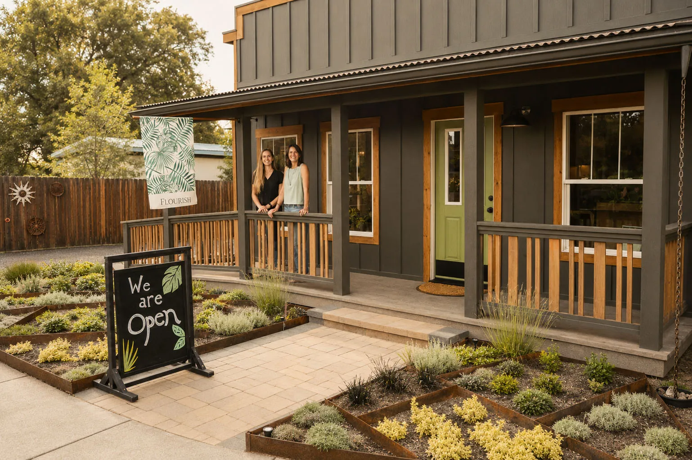
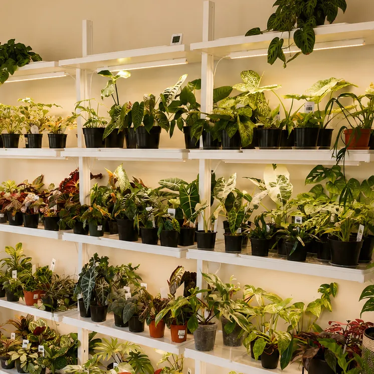
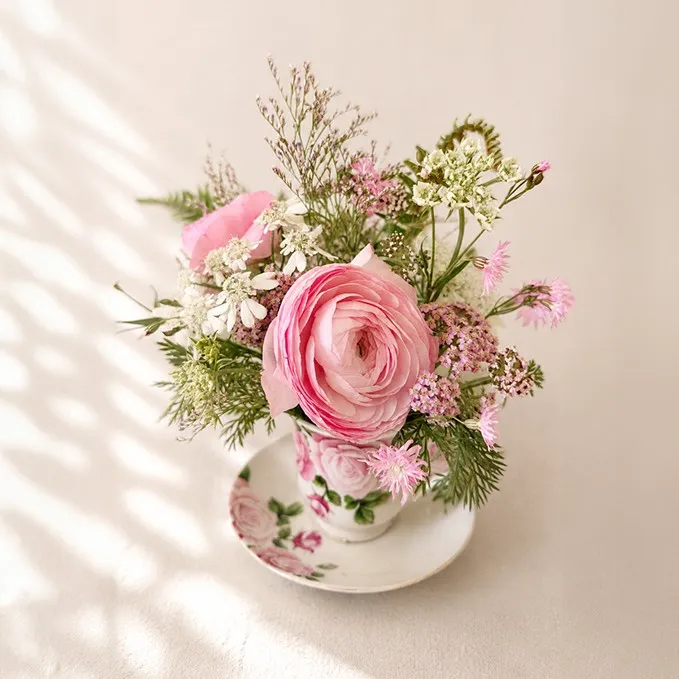
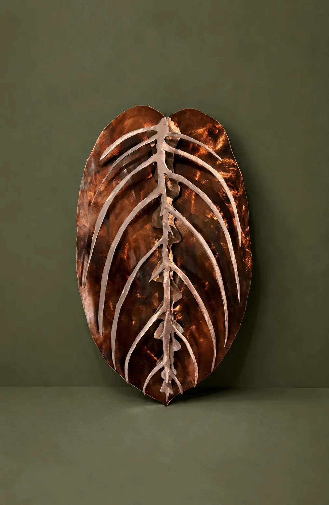

Planting Roots
in Tumalo
Flourish is a family-owned plant and flower shop rooted in creativity, community, and a love for bringing nature into everyday spaces.

Flourish is a family-owned plant and flower shop located in the charming town of Tumalo, Oregon, just minutes from Bend. What began as a small business hosting pop-ups and connecting with the community has grown into a welcoming shop in the heart of Tumalo. Flourish offers a carefully curated selection of plants, flowers, art, and plant care supplies. Rooted in a passion for greenery and creativity, Flourish is excited to bring its love for nature and artistry to locals and visitors alike, fostering a space where everyone can grow and thrive.
We source responsibly and provide guidance so your plants thrive — whether you’re a first-time plant parent or a seasoned collector.
Our Mission
Bringing beauty and life into everyday spaces
At Flourish, we believe plants are more than decoration—they are companions, healers, and sparks of creativity. Our mission is to equip individuals with the knowledge, tools, and inspiration to grow with confidence, creating homes and communities that thrive with greenery, beauty, and art.
Plants
Flourish began with a love of tropical and rare plants, and that passion is at the root of everything we do. From resilient houseplants to unique specimens, we provide guidance and care tips so every plant parent—whether beginner or seasoned—can succeed. With personalized advice and resources, we help you grow plants that fit your lifestyle and environment.


Flowers
Flowers bring joy, color, and expression to everyday life. Our selection of blooms celebrates the artistry of nature, offering arrangements that inspire and uplift. From simple stems to bold bouquets, we teach our community how to care for flowers and incorporate them into their homes and celebrations. Each flower we share is chosen to brighten spaces and moments alike.
Art
At Flourish, creativity blooms alongside greenery. We feature original metal art and crafted pieces that complement natural beauty, turning plant care into a full experience of design and expression. Our art offerings highlight the connection between nature and creativity—where every leaf, petal, and crafted piece tells a story and enriches your environment.

Our Goal
For everyone who visits Flourish to walk away with confidence and inspiration, knowing they can nurture life, beauty, and creativity in their own spaces. Whether through plants, flowers, or art, we want our community to thrive—together.